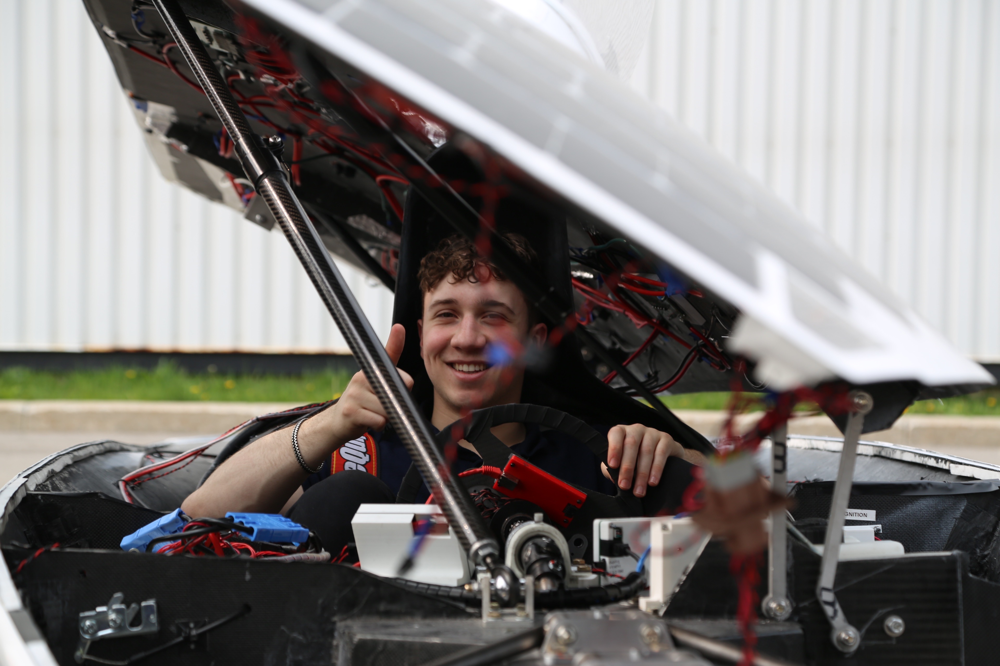
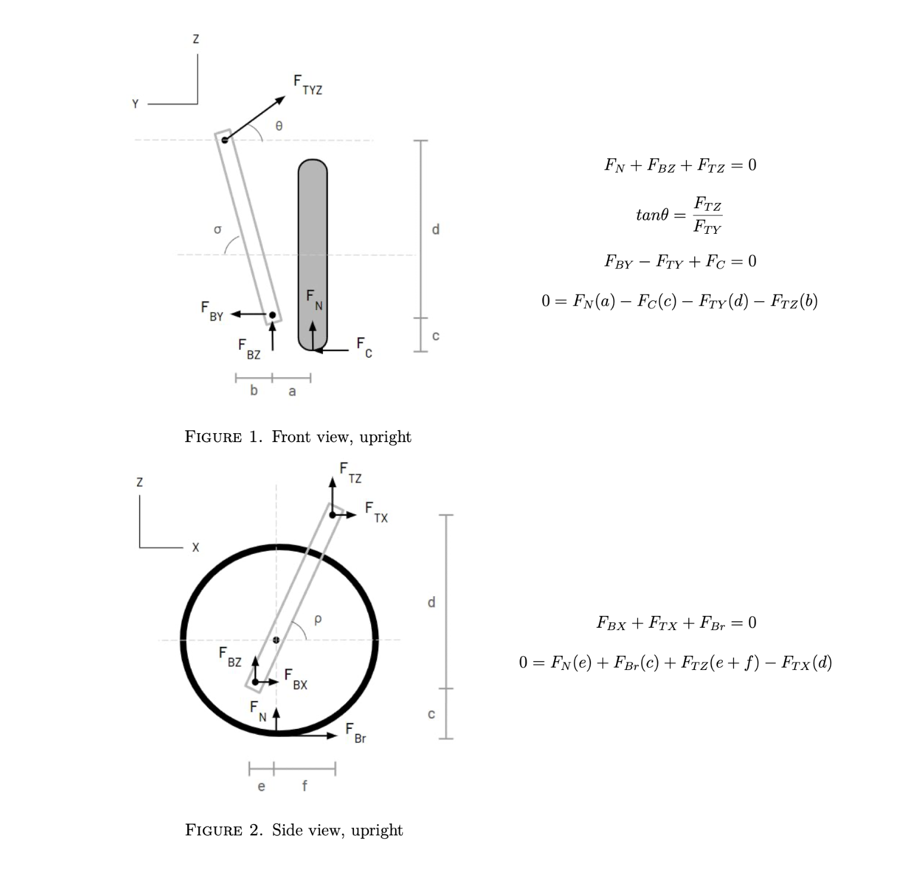
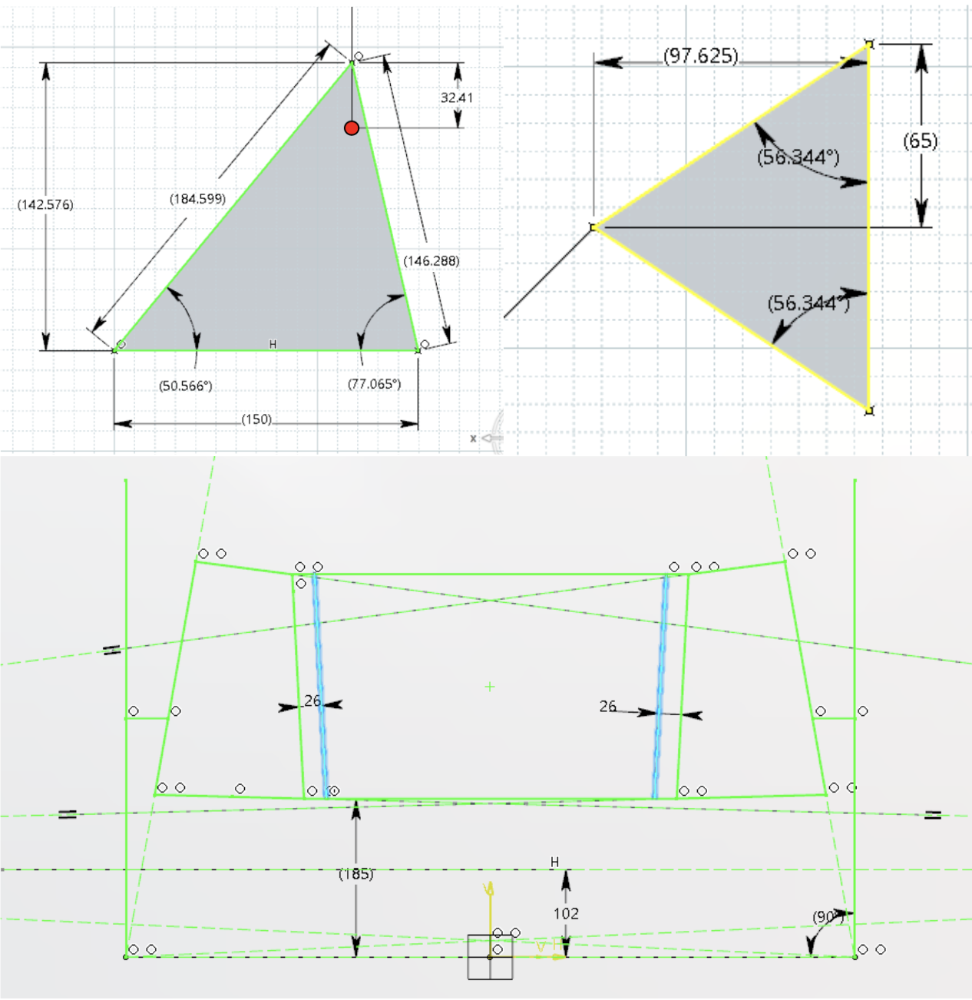
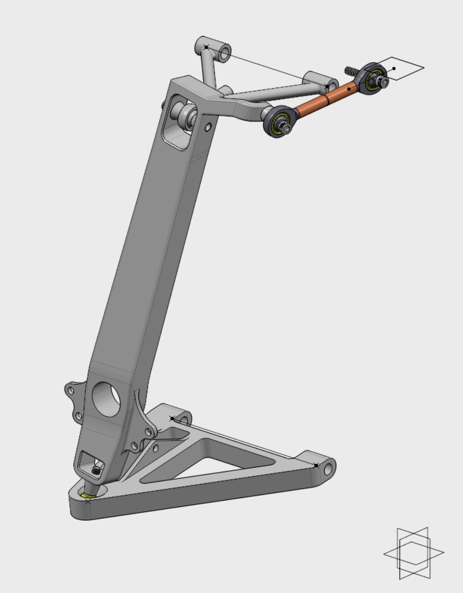
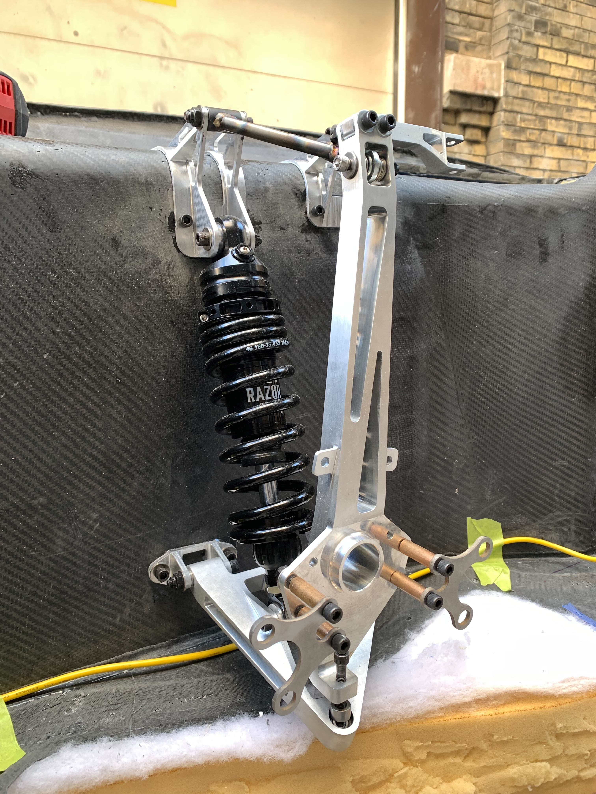

Blue Sky Solar Racing, 2022–2025
Blue Sky Solar Racing is a student-led team at the University of Toronto that designs solar-powered vehicles for endurance races. In 2023, I contributed as both a mechanical subteam member and solar driver, covering over 1200 km during the World Solar Challenge in Australia. After the race, I was promoted to lead mechanical engineer. In collaboration with fellow leads, we identified the suspension system as a critical area for improvement in our next car, Aurora.
I began the new design cycle by establishing key vehicle parameters, including center of gravity, track width, and wheelbase, using vehicle dynamics models from literature. I then developed a CAD-based wireframe model of the front and rear suspension systems and derived a complete set of free-body diagrams for load analysis. I conducted extensive parameter studies to optimize bump steer, scrub radius, joint loads, and cornering performance while satisfying packaging constraints. With the concept finalized, I recruited and led a team of ten students through a three-month design sprint, guiding the design and ANSYS validation of four suspension arms, the hub and axle, and braking components. The assembled suspension achieved a 30% reduction in mass compared to the previous cycle, marking a step toward a lighter, more competitive vehicle set to race in the 2026 American Solar Challenge.



